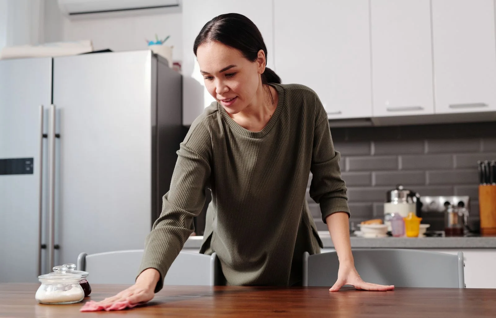
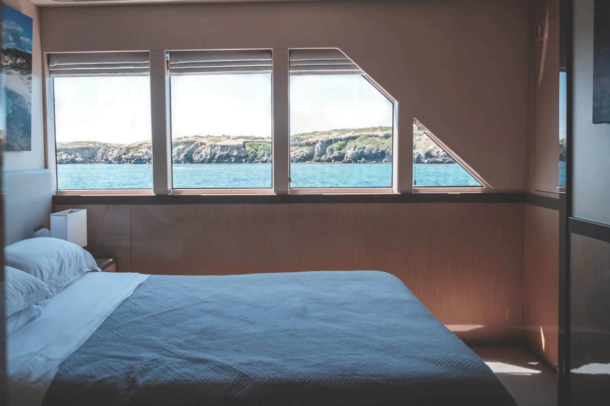
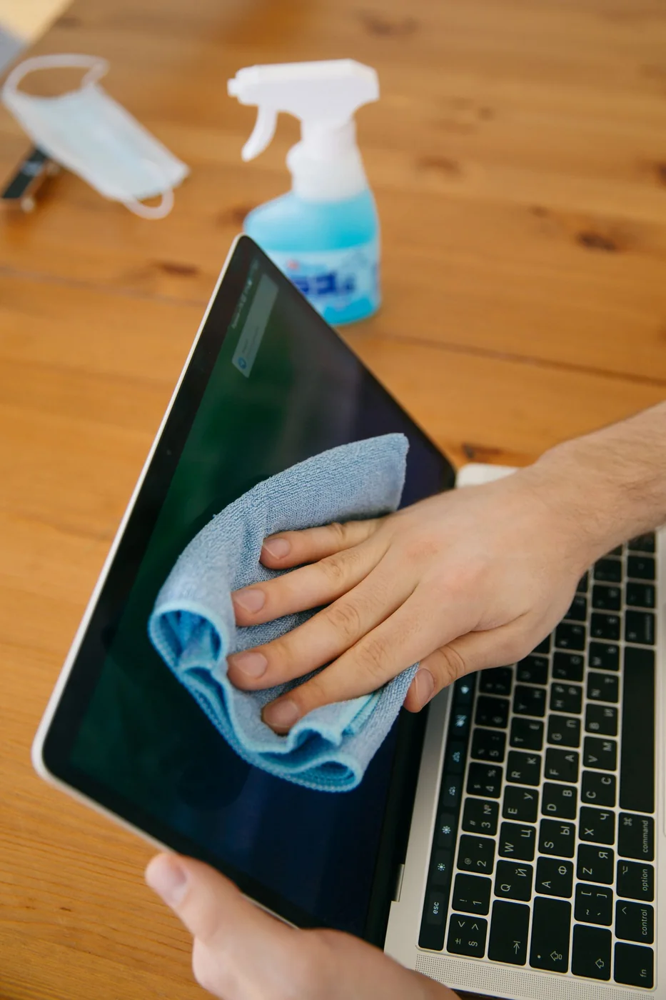
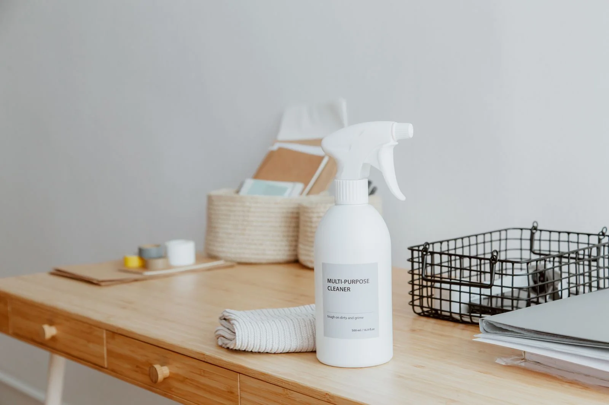
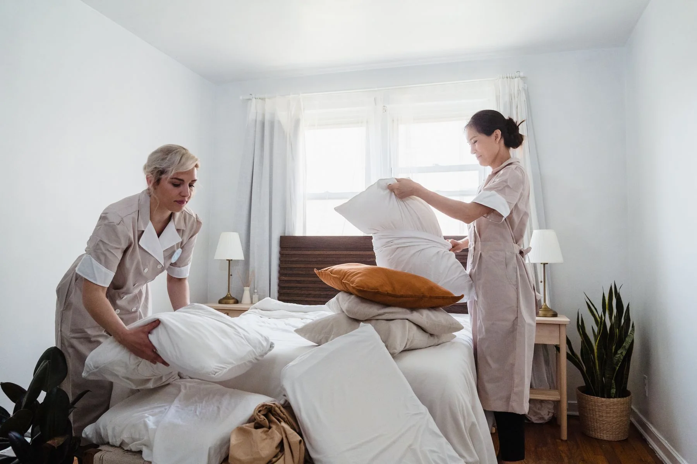

A simple rhythm for a calmer home
Small, repeatable routines can make your home feel fresh without taking over your day. Start with the rooms you use most, kee…
Helpful tips, expert advice and a behind-the-scenes look at cleaner, brighter living across Florida.

From a considered deep clean to those last guest-ready details, a little planning makes it easier to settle in and enjoy the sunshine.

Small, repeatable routines can make your home feel fresh without taking over your day. Start with the rooms you use most, kee…

A few thoughtful details make time aboard feel easier: fresh bedding, clear surfaces and an orderly galley. A planned interio…

Salt spray and everyday fingerprints can quickly soften a view. A gentle, material-aware glass routine keeps windows brighter…

The right cloth and a patient wipe make a visible difference on bright surfaces. Work in small sections and finish with a dry…
Simple shared habits help a workplace stay ready for the next meeting. Keep common surfaces clear, give touchpoints regular a…

A welcoming home starts with a few calm priorities: fresh entryway, tidy kitchen, clear guest bath and linens ready to go. A …
Call our team to talk about a home or yacht cleaning plan.
Small, repeatable routines can make your home feel fresh without taking over your day. Start with the rooms you use most, keep the tools close and give high-touch surfaces a quick pass. When you need a full reset, Clino can help.
Want help getting started? Call Clino at +1 (561) 275-4445.
A few thoughtful details make time aboard feel easier: fresh bedding, clear surfaces and an orderly galley. A planned interior refresh helps your cabin welcome you back between trips.
Want help getting started? Call Clino at +1 (561) 275-4445.
Salt spray and everyday fingerprints can quickly soften a view. A gentle, material-aware glass routine keeps windows brighter while protecting the surfaces around them.
Want help getting started? Call Clino at +1 (561) 275-4445.
The right cloth and a patient wipe make a visible difference on bright surfaces. Work in small sections and finish with a dry microfiber cloth for a clean, even result.
Want help getting started? Call Clino at +1 (561) 275-4445.
Simple shared habits help a workplace stay ready for the next meeting. Keep common surfaces clear, give touchpoints regular attention and schedule professional cleaning around your team.
Want help getting started? Call Clino at +1 (561) 275-4445.
A welcoming home starts with a few calm priorities: fresh entryway, tidy kitchen, clear guest bath and linens ready to go. A professional clean gives you more time to enjoy the visit.
Want help getting started? Call Clino at +1 (561) 275-4445.